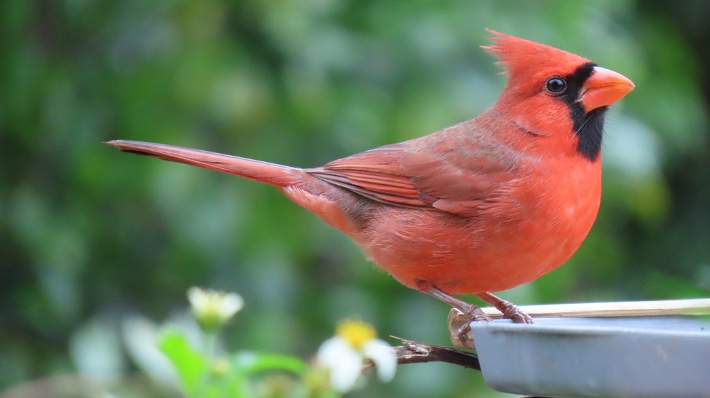

U.S. BACKYARD BIRD GUIDE
What bird
is that?
Meet the birds just outside your window. Use real photos and simple clues to identify nine common U.S. backyard birds.
Explore the bird guide
Find your backyard visitor
Start with a name, a color, or your part of the country.


Try a different clue or choose “All regions.”
Region filters highlight where you might see these birds. Local ranges and seasons vary, and females or young birds can look different from the birds pictured.
FROM YOUR WINDOW OR PORCH
Make a little time for birds
Pick a spot where you can sit comfortably and watch for a few minutes.
Get the printable checklist- Notice the shape first. Look for a crest, a long tail, or a short, thick bill.
- Watch where it lands. A bird hopping on the lawn can give you a different clue from one climbing a tree trunk.
- Write down what you saw. Record the date, the bird’s colors, and what it was doing. Compare your notes next time.